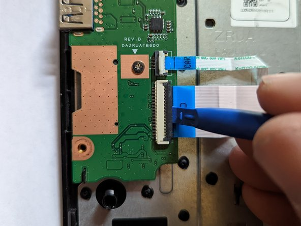

Troubleshoot a Chromebook with its model and management context
Use ChromeOS Diagnostics to test a charging, wireless or boot complaint and distinguish hardware work from data-erasing recovery.
Distinguish a Chromebook from a similarly named laptop
Record the full model and board or recovery identifier as documented. Similar external cases can use different storage, display harnesses and mainboards. Identify if a school or employer manages the unit. In that case confirm scope with its administrator before account changes or recovery. On an Acer CP714-1HN practice case look up the lifecycle service diagrams for the correct variant before choosing parts. Compare its guide with the separate Acer CB3-532 I/O board pictured below.

Photo by Tony Webster, scaled with on-page callouts. Original photo · CC BY 2.0.
.jpg){kind=link}

Photo by Jerry Wheeler and iFixit contributors, with added labels. Original guide · CC BY-NC-SA 3.0.
Watch the Chromebook Wi-Fi troubleshooting demonstration.
Run three closed-case tests
- Power a known-good or donated unit with an OEM-compatible charger. Record charging behaviour before and after starting. In ChromeOS Diagnostics record the battery entry and test result. Use a second approved adapter if a proper first test fails.
- For slow or unstable use, run the applicable CPU or memory test on a stable machine with owner consent. Record the code or report. Check the connectivity section against a known usable network before assuming the radio failed.
- For a device that does not start, distinguish dead, no video and the explicit ChromeOS recovery screen. Read the displayed model identifier. Internet recovery and removable recovery availability depend on model. Restore or Powerwash only with separate authorization and a plan for local files. Confirm managed enrollment through the administrator.
Retest the original symptom, channel and battery behaviour after reassembly. For a USB-C fault compare charge and data separately in P121 · Isolate laptop port, headphone and speaker faults. For customer data and acceptance use P122 · Protect laptop data and run a repeatable handover test.
Related lesson and source material
T57 · How laptop power, firmware, storage and operating systems meet.